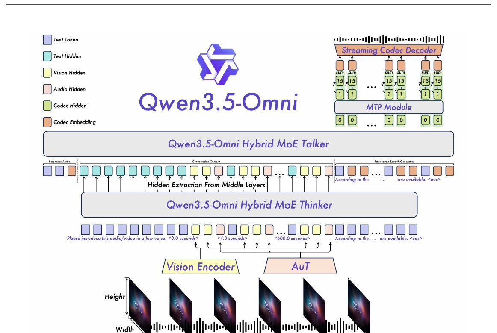
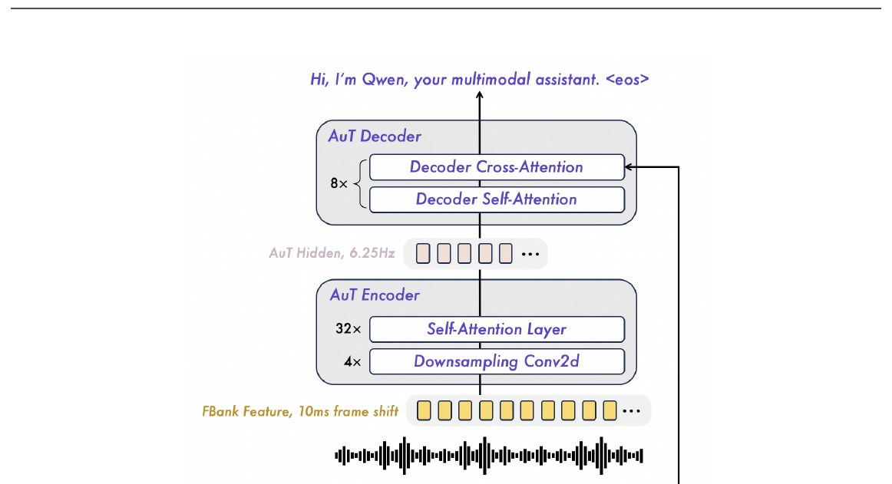

速览
五句话看懂
两端都上 Hybrid MoE
Thinker 和 Talker 都改为 Qwen3.5 的 Hybrid-Attention MoE（含 Gated Delta Net），主要收益是长音视频序列的 KV-cache I/O 和并发§2.5。上下文 256K，可吃 10 小时+ 音频或 400 秒 720P@1FPS 视频§2.1。
时间用文本写出来
每个视频 / 音视频时间片前加一个以秒为单位的文本时间戳，音频里再随机插时间戳；原因之一是纯绝对时间位置 ID 需要“跨帧率大规模均匀采样”的数据，构建成本高§2.3 · §3。
数据：量大，配比只露一半
S2 约 4T tokens，其中音频 1.99T、图像 0.95T、文本 0.92T、音视频 0.29T、视频 0.14T§3；AuT 用 4000 万小时 Qwen3-ASR 伪标注数据§2.2。清洗规则、S3 长序列配比、视觉数据规模均未披露。
ARIA：文本和语音单流交错
把 Qwen3-Omni 的双轨 Talker 改成单流交错，约束“任意前缀的语音/文本 token 累计比 ≤ 该条样本的全局比”§2.4。SEED test-en WER 1.26，表内最低表 8。
“持平 Gemini-3.1 Pro”要打折
音视频上 Plus 赢了 DailyOmni（84.6 vs 82.7）和 Omni-Cloze caption（64.8 vs 57.2），但 VideoMME 带音频 83.7 vs 89.0、OmniGAIA 57.2 vs 68.9 明显落后表 7。文本侧 AA-LCR 比同尺寸 Qwen3.5-Plus-Instruct 低 5.0表 4。
架构：Thinker–Talker + AuT
骨架沿用 Qwen2.5-Omni 提出的 Thinker–Talker：Thinker 出文本，Talker 以多模态输入和 Thinker 的文本输出为条件，流式出语音 token§2.1。

<4.0 seconds>）交错进入 Hybrid MoE Thinker；Talker 接收 Thinker 中间层隐状态（图中 “Hidden Extraction From Middle Layers”）和参考音频，自回归预测多码本序列：每步由 MTP 模块补出当前帧的残差码本，再由 Code2Wav 逐帧合成波形。来源：论文图 2五模块一览
| 模块 | 结构 | 流式 | 要点 |
|---|---|---|---|
| Audio Encoder | AuT | ✓ | 16 kHz → 128 通道 mel（25 ms 窗 / 10 ms 移）→ 6.25 Hz，每帧约 160 ms §2.3 |
| Vision Encoder | SigLIP2 | – | 沿用 Qwen3.5 视觉编码器，图像 + 视频混合训练；视频动态帧率采样 表 1 · §2.3 |
| Thinker | Hybrid MoE Transformer | ✓ | Qwen3.5 tokenizer，词表 250k（原 150k），多数语言编解码效率提升 10–60% §2.3 |
| Talker | Hybrid MoE Transformer | ✓ | RVQ 语音 token；ARIA 单流交错；音色 system prompt §2.4 |
| MTP | Dense Transformer | ✓ | 每步补出当前帧的残差码本 图 2 · §2.4 |
| Code2wav | ConvNet（因果） | ✓ | 逐帧合成；Codec Decode 3~5 ms 表 2 |
来源：表 1，补充 §2.3–2.5。
相对 Qwen3-Omni 的五项升级 §1
1Thinker / Talker 都改 Hybrid-Attention MoE
来自 Qwen3.5；其中 GDN 模块对长音视频序列加速明显，降低 KV-cache I/O，提高吞吐与并发§2.5。
2256K 长上下文
10 小时+ 音频；400 秒以上 720P 音视频（1 FPS）§1 · §2.1。
3多码本 codec，单帧即时合成
沿用 Qwen3-Omni 的 RVQ 表征；Talker 出第一层码本，MTP 补残差码本，因果 ConvNet 解码§2.4–2.5。
4ARIA 文本-语音对齐
解决文本 / 语音 tokenizer 编码效率不一致导致的跳字、读错、数字念混等问题§2.1。
5多语言扩展
语音识别 113 种语言与方言，语音合成 36 种§1 · 表 3。
注意摘要与正文语种数不一致
v2 摘要写“10 languages”的语音生成，正文与表 3 是 36 种（29 语言 + 7 方言），§5.2.2 评测 29 种摘要 · 表 3 · §5.2.2。
AuT：从头训练的音频编码器

- 训练数据：4000 万小时音频-文本对，文本由 Qwen3-ASR 生成§2.2。
- 相对 Qwen3-Omni 的编码器，加入 20 多种语言的多语数据，中文:英文:多语 = 3.5 : 3.5 : 3§2.2。
- 动态注意力窗口训练，兼顾实时 prefill 缓存与离线音频理解§2.2。
时间怎么编码：TM-RoPE + 文本时间戳
沿用 Qwen3-Omni 的 TM-RoPE：音频每 160 ms 一个时间 ID，视频帧的时间 ID 按真实时间戳动态调整到同样 160 ms 分辨率；各模态位置编号首尾相接，避免冲突§2.3。
新增的是显式文本时间戳：每个视频或音视频时间片前加一个以秒为单位的格式化字符串；音频序列里在随机间隔插入时间戳§2.3 · §3。论文给的两个理由：
- 长视频下，绝对时间直接当位置 ID 会让 ID 过大、过稀，削弱长程时序建模；
- 这种方案要学好，通常需要跨不同帧率大规模、均匀分布的训练样本，数据构建成本高。
代价是上下文略增§2.3。图 2 里能看到形如下面的序列（摘自原图文字）：
Please introduce this audio/video in a low voice. <0.0 seconds> [V][V][A] <4.0 seconds> [V][V][A] … <600.0 seconds> …
[V] / [A] 为本页简写，表示视觉 / 音频隐状态块；每段内具体排列以原图为准。
Talker：音色 prompt + ARIA
相对 Qwen3-Omni 的两处结构差异§2.4：
- Talker 专用 system prompt 指定目标音色，可含文字描述和 codec 序列，替代传统 speaker embedding，支持零样本音色克隆和可控生成。
- ARIA（Adaptive Rate Interleave Alignment）：把双通道生成统一成单通道。不依赖 MFA 强制对齐，也不用固定交错比；只要求生成序列的任意前缀，语音/文本 token 累计比不超过该条样本的全局比。天然支持“任意文本前缀 + 语音续写”。
流式与并发：表 2 理论首包延迟 Flash vs Plus · 1 / 4 / 8 并发
| 指标（音频 / 视频输入） | Flash 1 | Flash 4 | Flash 8 | Plus 1 | Plus 4 | Plus 8 |
|---|---|---|---|---|---|---|
| Thinker TTFT | 80/255ms | 86/446ms | 103/765ms | 162/377ms | 183/907ms | 260/1243ms |
| Talker TTFC | 56/61ms | 68/108ms | 81/116ms | 54/56ms | 72/88ms | 95/116ms |
| Thinker TPOP | 5.6/5.9ms | 8.2/9.2ms | 9.6/15.8ms | 17.4/18.5ms | 25.6/26.9ms | 33.3/40.2ms |
| Talker TPOP | 14.2/14.2ms | 16.9/17.0ms | 20.5/20.6ms | 14.9/14.9ms | 21.0/21.3ms | 25.8/27.1ms |
| Overall Latency | 235/426ms | 298/891ms | 352/1625ms | 435/651ms | 619/1515ms | 955/1980ms |
| Thinker TPS | 177/171 | 556/457 | 942/598 | 57/54 | 156/149 | 266/240 |
| Talker TPS | 70/70 | 237/235 | 389/388 | 67/67 | 191/189 | 320/296 |
| Generation RTF | 0.178 | 0.211 | 0.257 | 0.187 | 0.267 | 0.334 |
Codec Decode 3~5 ms。内部 vLLM，MTP 与 codec decoder 开 torch.compile + CUDA Graph。论文明确：Flash 与 Plus 部署资源和并行策略不同，不宜横向比较；ARIA 单流下 Overall Latency 不是各行相加表 2 · §2.5。
数据：披露了什么、没披露什么
规模给得多，过滤和配比给得少。下面把每一份数据单列，没给的明确标 原文未披露。
来源与模态
- 预训练覆盖 image-text、video-text、audio-text、video-audio、video-audio-text 和纯文本§3。
- 从预训练早期就同时混入单模态和跨模态数据§3；沿用 Qwen3-Omni，用更多样的自然语言 prompt 增强泛化与指令遵循§3。
- 具体来源（公开集 / 爬取 / 授权 / 合成占比）原文未披露。
已披露规模
| 数据 | 规模 | 标注 / 生成方式 | 来源 |
|---|---|---|---|
| 音视频总量 | >1 亿小时 | 未说明 | 摘要 · §1 |
| AuT 编码器训练 | 4000 万小时音频-文本对 | 文本由 Qwen3-ASR 生成（伪标注）；20+ 语言；中:英:多语 = 3.5:3.5:3 | §2.2 |
| S1 编码器对齐 | 原文未披露 | “大量”音频-文本、图像-文本对 | §3 |
| S2 通用预训练 | 约 4T tokens | 文本 0.92T · 音频 1.99T · 图像 0.95T · 视频 0.14T · 音视频 0.29T | §3 |
| S3 长序列 | 原文未披露 | 提高长音频、长视频占比；具体比例未给 | §3 |
| Thinker SFT / 蒸馏 | 原文未披露 | ChatML 格式；文本 / 视觉 / 音频 / 混合模态对话；各领域教师模型生成 | §4.1 |
| Thinker OPD | 原文未披露 | 音频-文本成对 query；文本条件下的回答作为音频条件的目标 | §4.1 |
| Interaction-Aligned RL | 原文未披露 | 构造多轮交互轨迹；奖励围绕语种混切、人设一致、长上下文指令遵循 | §4.1 |
| Talker 通用预训练 | >2000 万小时 | 多语语音 + 多模态上下文；含指令式语音生成等任务 | §4.2 |
| Talker 长上下文 CPT | 原文未披露 | 专门的 curation pipeline 做质量分层，只用高质量子集；由 Qwen3-Omni-Captioner 增强 | §4.2 |
| Talker DPO | 原文未披露 | 基于人工标注的多语偏好对 | §4.2 |
| Talker 音色微调 | 原文未披露 | 轻量 speaker fine-tuning；仅单语数据 | §4.2 · §5.2.4 |
| 视觉编码器数据 | 原文未披露 | 沿用 Qwen3.5 视觉编码器，图像 + 视频混合训练 | §2.3 |
配比：只有两处给了数
AuT 训练语种比 原文给出比例
4000 万小时总量下各语种小时数未给出；“多语”含 20 多种语言，内部比例未披露。
S2 各模态 token 数 原文给出绝对量
五项相加为 4.29T推算，原文称“approximately 4 trillion”。图像-文本、视频-文本等是否计入“图像 / 视频”口径未说明。这是绝对量，不是原文给出的百分比。
清洗、过滤与合成
伪标注当监督 AuT
AuT 的 4000 万小时文本标签来自上一代专用模型 Qwen3-ASR§2.2。是否按置信度过滤原文未披露。
质量分层 + 高质量 CPT Talker
先用专门 pipeline 分层，再只在高质量子集上继续预训练，并用 Qwen3-Omni-Captioner 增强，目的是压掉噪声数据带来的幻觉、提升自然度§4.2。分层标准、阈值、保留比例原文未披露。
教师合成数据 Thinker
从 Qwen3.5 base 分别 SFT + RL 出文本（agent / code / 推理）、视觉、音频领域教师，由教师生成领域数据再蒸馏进单一模型§4.1。
跨条件自蒸馏 Thinker
同一 query 的文本版回答当作音频版的训练目标，缩小“语音问”与“文字问”的质量差§4.1。
caption / 标注方式
- ASR 伪标注：Qwen3-ASR → AuT 训练文本§2.2。
- Captioner 增强：Qwen3-Omni-Captioner 用于 Talker 长上下文 CPT 阶段的数据增强§4.2；具体是补描述、做过滤还是生成条件文本，原文没细说。
- 时间戳作为文本：时间信息以
<x.x seconds>字符串形式写进训练序列§2.3 · 图 2。 - 可控音视频 caption：模型能输出剧本级结构化描述，含自动分段、时间戳、角色及其与音频的关系§1。但这项能力的训练数据、schema、标注流程原文未披露，只有 Omni-Cloze 一个分数。
表 3：语言与方言覆盖（Plus） 201 / 113 / 36
| 模态 | 种类数 | 构成 |
|---|---|---|
| 文本 | 201 | 同 Qwen3.5 |
| 语音输入 | 113 | 74 种语言 + 39 种汉语方言（含粤语、上海话、四川话、客家话、闽南语等） |
| 语音输出 | 36 | 29 种语言 + 7 种方言（四川话、北京话、天津话、南京话、陕西话、粤语、闽南语） |
训练配方
学习率、batch、步数、优化器、MoE 专家数等超参原文未披露。下面只列原文写明的阶段与条件。
预训练：三阶段 §3
Encoder Alignment
- LLM
- 冻结，Qwen3.5 初始化
- 视觉
- Qwen3.5 编码器
- 音频
- AuT 初始化
- 顺序
- 先训 adapter，再训编码器
两个编码器在固定 LLM 上分别训练。
General
- 参数
- 全部解冻
- 数据
- ≈4T tokens
- 序列长
- 32,768
条：32,768 / 262,144 = 12.5%推算
Long Context
- 序列长
- 262,144
- 数据
- 加大长音频 / 长视频占比
- 规模
- 未披露
论文称长序列理解“显著提升”，未给数字。
Thinker 后训练：三阶段 §4.1
Specialist Distillation
- 从 Qwen3.5 base 出发，独立 SFT + RL 出各领域教师
- 文本（agent / code / 推理）、视觉、音频
- 教师生成领域数据 → 蒸馏进一个统一模型
On-Policy Distillation（OPD）
- 问题：语音提问的回答质量明显不如文字提问
- 同一 query：文本条件下的回答 → 音频条件的目标
- 目标：模态一致的生成
Interaction-Aligned RL
- 针对多轮中的语种混切、人设漂移、长上下文指令遵循下降
- 构造多轮交互轨迹，围绕体验目标设计奖励
- 奖励形式、算法未披露
Talker：四阶段 §4.2
General
- 数据
- >2000 万小时
- 任务
- 含指令式语音生成
Long-Context CPT
- 数据
- 质量分层后的高质量子集
- 增强
- Qwen3-Omni-Captioner
- 上下文
- 64k
RL
- 偏好
- DPO，人工标注多语偏好对
- 规则奖励
- GSPO
Speaker FT
- 方式
- 轻量音色微调
- 数据
- 仅单语 §5.2.4
Talker 全程使用 ChatML 格式，与 Thinker 保持一致，也便于音色克隆§4.2。
评测
两组对比对象：文本 / 视觉对比同尺寸的 Qwen3.5-Plus-Instruct（看“有没有退化”）；音频 / 音视频对比 Gemini-3.1 Pro；语音生成对比专用 TTS 与商业 API。
音视频 → 文本（表 7）
use_audio_in_video=True 评测。ᵇ OmniGAIA 不加 thinking prompt、不要求 <answer> 格式，全部用 DeepSeek-V3.2-Thinking 作评判表 7 脚注。Plus 领先：DailyOmni、Qualcomm IVD、Omni-Cloze；落后：WorldSense、AVUT（-0.6）、AV-SpeakerBench、VideoMME w/ audio、OmniGAIA。音频 → 文本（表 5 节选）
| 基准 | Gemini-3.1 Pro | Omni-Flash | Omni-Plus |
|---|---|---|---|
| Audio Understanding ↑ | |||
| MMAU | 81.1 | 80.4 | 82.2 |
| MMAR | 83.7 | 74.0 | 80.0 |
| MMSU | 81.3 | 72.2 | 82.8 |
| RUL-MuchoMusic | 59.6 | 60.5 | 72.4 |
| SongFormBench-HarmonixSeta (acc|hr.5f|hr3f) | 75.6 | 46.8 | 77.9 | 80.6 | 67.8 | 83.4 | 81.1 | 72.9 | 85.3 |
| Dialogue ↑ | |||
| VoiceBench | 88.9 | 87.8 | 93.1 |
| URO-Bench-prob (U|R|O) | 69.1 | 84.0 | 99.2 | 64.1 | 83.8 | 98.7 | 66.3 | 86.3 | 99.8 |
| SpeechRole | 124.2 | 119.8 | 123.5 |
| WildSpeech-Bench | 76.3 | 72.2 | 75.4 |
| S2TT ↑ | |||
| Fleurs xx↔zh/en (top59)c | 32.1 | 29.4 | 32.8 |
| ASR（WER ↓） | |||
| Fleurs (top60) | 7.32 | 10.75 | 6.55 |
| Librispeech (clean|other) | 3.36 | 4.41 | 1.30 | 2.43 | 1.11 | 2.23 |
| Kespeech | 23.67 | 4.47 | 3.46 |
| Opencpop | 6.83 | 1.11 | 1.49 |
脚注（表 5 原文）：a SongFormBench 用统一 prompt 规定类 SRT 时间戳输出格式和封闭词表（SongForm-HX-8Class）；b URO-Bench 取 pro 赛道，U = 理解、R = 推理、O = 口语对话；c Fleurs S2TT 用 top59 语言，比 ASR 的 top60 少 Afrikaans（S2TT 测试集不含）；d MIR-1K 转写统一转为简体中文。MMAR 原文称“comparable”，实际 Plus 低 3.7推算。
表 5 其余行 SongForm-CN、S2TT 分项、其余 ASR
| 基准 | Gemini-3.1 Pro | Omni-Flash | Omni-Plus |
|---|---|---|---|
| SongFormBench-CNa (acc|hr.5f|hr3f) | 78.1 | 43.2 | 71.9 | 86.7 | 66.4 | 84.6 | 87.1 | 65.7 | 84.2 |
| Fleurs xx↔zh (top59)c | 29.5 | 26.9 | 30.2 |
| Fleurs xx↔en (top59)c | 34.6 | 32.0 | 35.4 |
| CV15 (zh|yue|zh-tw) | 8.59 | 13.40 | 6.78 | 4.25 | 3.45 | 2.68 | 3.46 | 1.95 | 2.27 |
| CV15 (en) | 8.73 | 5.90 | 4.83 |
| Wenetspeech (net|meeting) | 11.53 | 14.21 | 4.41 | 5.51 | 4.30 | 5.84 |
| MIR-1K (vocal-only)d | 8.76 | 4.94 | 4.56 |
文本 / 视觉：有没有退化（表 4、表 6）
怎么读
- 文本：14 项里只有 IFBench 高于基线（52.6 vs 51.1），IFEval 持平，其余低 0.1–5.0；最大是 AA-LCR 57.0 vs 62.0表 4。论文把 IFBench 的提升归功于 OPD 和交互 RL§5.1.1，但无消融。
- 视觉：静态图像多数低 0.1–2.2；视频六项全部高于基线，如 LVBench 71.2 vs 68.6、MME-VideoOCR 77.0 vs 74.2；RealWorldQA 84.1 vs 79.1表 6。论文归因于音视频联合训练§5.1.3。
- Flash 与基线差距大得多，如 HMMT Nov 25 59.0 vs 86.2表 4，但两者规模不同，不能当“退化”读。
表 6 视觉 → 文本 全表 30 项
| 基准 | Qwen3.5-Plus-Instruct | Omni-Flash | Omni-Plus |
|---|---|---|---|
| STEM and Puzzle | |||
| MMMU | 81.0 | 76.9 | 80.1 |
| MMMU-Pro | 73.8 | 68.2 | 73.9 |
| MathVision | 73.6 | 65.4 | 73.0 |
| Mathvista (mini) | 86.9 | 82.9 | 86.1 |
| DynaMath | 84.2 | 79.3 | 83.8 |
| ZEROBench | 6 | 1 | 5 |
| ZEROBench_sub | 31.1 | 26.0 | 34.4 |
| General VQA | |||
| RealWorldQA | 79.1 | 77.5 | 84.1 |
| MMStar | 80.3 | 75.7 | 79.4 |
| MMBenchEN-DEV-v1.1 | 93.8 | 88.8 | 92.8 |
| SimpleVQA | 66.1 | 54.4 | 65.3 |
| Text Recognition and Document Understanding | |||
| CharXiv (RQ) | 74.2 | 64.4 | 72.5 |
| CC-OCR | 83.0 | 80.8 | 83.4 |
| AI2D_TEST | 92.1 | 89.0 | 91.2 |
| MMLongBench-Doc | 59.7 | 53.6 | 57.5 |
| OCRBench | 91.4 | 89.1 | 91.3 |
| Spatial Intelligence | |||
| ERQA | 53.8 | 50.0 | 54.8 |
| CountBench | 95.1 | 88.2 | 95.1 |
| RefCOCO (avg) | 95.2 | 92.6 | 95.0 |
| ODInW13 | 50.3 | 46.8 | 49.5 |
| EmbSpatialBench | 83.4 | 82.7 | 85.4 |
| Video Understanding | |||
| VideoMME (w/o sub.) | 81.0 | 77.0 | 81.9 |
| MLVU (M-Avg) | 85.1 | 81.9 | 86.8 |
| MVBench | 76.7 | 70.8 | 79.0 |
| LVBench | 68.6 | 65.7 | 71.2 |
| MMVU | 67.1 | 62.7 | 67.5 |
| MME-VideoOCR | 74.2 | 70.5 | 77.0 |
| Medical VQA | |||
| SLAKE | 82.8 | 73.1 | 84.7 |
| PMC-VQA | 62.4 | 58.7 | 62.7 |
| MedXpertQA-MM | 55.3 | 44.8 | 54.7 |
表 4 文本 → 文本 全表 14 项
| 基准 | Qwen3.5-Plus-Instruct | Omni-Flash | Omni-Plus |
|---|---|---|---|
| MMLU-Pro | 86.8 | 79.9 | 85.9 |
| MMLU-Redux | 94.3 | 90.0 | 94.2 |
| SuperGPQA | 67.4 | 54.9 | 66.4 |
| C-Eval | 92.3 | 86.0 | 92.0 |
| IFEval | 89.7 | 85.2 | 89.7 |
| IFBench | 51.1 | 38.4 | 52.6 |
| AA-LCR | 62.0 | 46.0 | 57.0 |
| LongBench v2 | 60.2 | 46.4 | 59.6 |
| GPQA | 85.9 | 76.4 | 83.9 |
| LiveCodeBench v6 | 67.1 | 56.6 | 65.6 |
| HMMT Nov 25 | 86.2 | 59.0 | 84.4 |
| IMOAnswerBench | 68.3 | 51.5 | 65.5 |
| BFCL-V4 | 66.1 | 55.3 | 63.3 |
| TAU2Bench | 82.7 | 78.0 | 81.0 |
X → 语音（表 8–12）
零样本 TTS · SEED 表 8
Plus：test-zh 0.99、test-en 1.26（表内最低）。test-zh 最低是 CosyVoice 3 的 0.71。前代 Qwen3-Omni-30B-A3B 为 1.07 | 1.39表 8。
多语 TTS 表 9 · 表 10
论文称 29 种语言中 22 种 WER 最低§5.2.2。但表 9 只有 20 种语言有 MiniMax / ElevenLabs 对比，Plus 在其中 13 种最低推算；另外 9 种来自内部集（表 10），只和 Ground Truth 比。WER 用 GPT-4o-transcribe-2025-03-20 转写§5.2.2。
跨语种克隆 表 11
论文称 12 个方向中 10 个最好§5.2.3；按表 11 数，只有 ja→zh（3.55 vs CosyVoice3 3.05）不是最低，即 11/12推算。zh→ko 4.03 vs CosyVoice3 14.4，相对降低约 72%§5.2.3。
定制音色 表 12
只用单语数据做音色微调，迁移到 29 种语言；10 种语言 WER 最低，如日语 3.306、韩语 1.309表 12 · §5.2.4。对比 API 为 2026 年 3 月调用的 ElevenLabs Multilingual v2、Gemini-2.5 Pro-Preview-TTS、GPT-Audio-2025-08-28、MiniMax-Speech-2.8-HD，并写明了音色 ID§5.2.4。
表 11 跨语种语音生成全表 混合错误率 ↓
| 方向 | Qwen3.5-Omni-Plus | Qwen3-Omni-30B-A3B | CosyVoice3 | CosyVoice2 |
|---|---|---|---|---|
| en → zh | 4.86 | 5.37 | 5.09 | 13.5 |
| ja → zh | 3.55 | 3.32 | 3.05 | 48.1 |
| ko → zh | 0.84 | 0.99 | 1.06 | 7.70 |
| zh → en | 2.18 | 2.76 | 2.98 | 6.47 |
| ja → en | 2.18 | 3.31 | 4.20 | 17.1 |
| ko → en | 2.51 | 3.34 | 4.19 | 11.2 |
| zh → ja | 5.92 | 8.29 | 7.08 | 13.1 |
| en → ja | 5.12 | 7.53 | 6.80 | 14.9 |
| ko → ja | 2.16 | 4.24 | 3.93 | 5.86 |
| zh → ko | 4.03 | 5.13 | 14.4 | 24.8 |
| en → ko | 3.72 | 4.96 | 5.87 | 21.9 |
| ja → ko | 5.12 | 6.23 | 7.92 | 21.5 |
英文为 WER，其余为 CER表 11。“最好”圆点为本页按表内数字标注。
新在哪
只列能在原文里核对到具体做法的点。Hybrid MoE / GDN 是从 Qwen3.5 继承的骨干，不算本文发明。
文本时间戳 + TM-RoPE 并用
保留 160 ms 粒度的时间 ID，同时在每个时间片前写 <x.x seconds>，音频随机插戳§2.3。
为什么值得看：理由里明确写了“降低数据构建成本”——不再要求跨帧率均匀采样的训练集。
ARIA：前缀比约束的单流交错
用“任意前缀语音/文本累计比 ≤ 样本全局比”这一条约束替代 MFA 对齐和固定交错率§2.4。
为什么值得看：不依赖外部对齐器，对编码效率低的语言也适用；但原文没给 ARIA 的单独消融。
音色用 system prompt 表达
Talker 的 system prompt 可包含文字描述和 codec 序列，替代 speaker embedding，统一零样本克隆与可控生成§2.4。
文本条件 → 音频条件的 on-policy 蒸馏
同一问题的文本版回答当音频版目标，专门缩小语音输入下的质量差§4.1。
Captioner 介入语音生成的数据管线
Talker 长上下文 CPT 阶段先做质量分层，再用 Qwen3-Omni-Captioner 增强高质量子集，用来压低噪声数据导致的幻觉§4.2。
对图像编辑数据、评测和 caption 的启示
Qwen3.5-Omni 不是编辑模型，但它在“结构化描述、伪标注、跨条件蒸馏、评测口径冻结”上的做法可以直接借。每条先写论文怎么做，再写迁移建议。迁移建议是本页的推断，不是论文内容。
C1把结构信息写成文本，而不是只靠位置编码
论文：时间不再只靠位置 ID，而是写成 <4.0 seconds> 文本插进序列；理由之一是省掉“各帧率均匀覆盖”的数据成本§2.3 · §3。
迁移建议，不是论文内容：多图编辑（原图 + 参考图 + mask）的样本里，用显式文本标记 <图1 原图> <图2 参考> 引出每张图，caption 里按标记引用。这样训练集不必均匀覆盖“参考图数量 × 位置”的所有组合。
C2分段 + 时间戳 + 角色关系的剧本级 caption
论文：主打可控、结构化 caption，含自动分段、时间戳、角色及其与音频的关系§1；Omni-Cloze 上 Plus 64.8，Gemini-3.1 Pro 57.2表 7。schema 未公开。
迁移建议，不是论文内容：编辑 caption 也按“段”组织：全局场景 → 编辑区域与操作 → 必须保持的主体 / 属性 → 主体间关系。视频编辑再加时间段。可控粒度（简 / 详）作为 prompt 参数，同一条样本出多档 caption。
C3Captioner 当数据质量工具用
论文：Talker 长上下文 CPT 前做质量分层，并用 Qwen3-Omni-Captioner 增强，目标是减少噪声数据带来的幻觉§4.2。
迁移建议，不是论文内容：对编辑三元组（原图、指令、结果图）分别跑密集 caption，用“指令要求的变化是否出现在两份 caption 的差异里”给样本打质量档，最后阶段只用高档样本继续训练。
D1用上一代专家模型规模化伪标注，并把配比写死
论文：AuT 的 4000 万小时标签来自 Qwen3-ASR，中:英:多语固定为 3.5:3.5:3§2.2。
迁移建议，不是论文内容：用上一版编辑模型 + VLM 判分批量造数据时，先定好编辑任务类型配比（如替换 / 删除 / 风格 / 文字），按比例采样，并在数据卡里记录。论文本身没披露伪标注的过滤阈值，这一步要自己补上。
D2跨条件自蒸馏：强条件的输出当弱条件的目标
论文：同一 query 在文本条件下的回答，作为音频条件下的训练目标，缩小模态质量差§4.1。
迁移建议，不是论文内容：同一编辑任务写一条详细结构化指令和一条口语短指令；用详细指令生成并筛出的结果，同时作为短指令的目标。这样短指令 / 口语指令的效果可以向详细指令靠拢。
D3后期阶段只喂高质量子集
论文：Talker 先在 2000 万小时数据上做通用预训练，再在质量分层后的高质量子集上 CPT§4.2；Thinker 预训练 S3 提高长样本占比§3。
迁移建议，不是论文内容：编辑模型训练也按“广覆盖 → 高质量 → 难例 / 长指令”分阶段，后期阶段提高多步编辑、长指令样本的占比，每阶段的数据档位和比例都记下来。
E1加新能力后，对同尺寸单能力模型做全套回归
论文：文本 14 项、视觉 30 项都和同尺寸的 Qwen3.5-Plus-Instruct 并排比较表 4 · 表 6。
迁移建议，不是论文内容：在文生图底座上加编辑能力后，固定跑一套文生图基准和底座并排比较，并画逐项分差图（像本页 §06 那样）。只报平均分会掩盖 AA-LCR −5.0 这种单项跌幅。
E2把判官、转写模型和 API 版本写死
论文：OmniGAIA 固定 DeepSeek-V3.2-Thinking 判分；内部 TTS 集固定 GPT-4o-transcribe-2025-03-20；商业 API 注明 2026 年 3 月调用并给出音色 ID；SongFormBench 统一 prompt + 封闭词表表 5 · 表 7 · §5.2。
迁移建议，不是论文内容：编辑评测报告里固定写出：VLM 判官型号与日期、判分 prompt 哈希、竞品 API 调用日期与参数、输出格式约束。换判官就单独开一版分数，不和旧版混排。
E3给参考答案也打一次分
论文：内部多语 TTS 集把 Ground Truth 录音也用同一 ASR 算 WER，和模型并排列出表 10。
迁移建议，不是论文内容：编辑评测集里人工修图的参考结果也用同一判官打分，作为“判官噪声底”。模型分数接近或超过参考结果时，先怀疑判官，再下结论。
E4“赢了几项”只在有对手的行里数
论文：多语 TTS “29 种中 22 种最低”，但其中 9 种只有 Ground Truth 对照§5.2.2 · 表 10。
迁移建议，不是论文内容：编辑基准的胜场统计只计入有竞品结果的子类，并把“无对照子类”单列；对外宣称时同时给出分母。
局限与存疑
- 没有消融。文本时间戳、ARIA、音色 prompt、OPD、Interaction-Aligned RL 都只有描述，没有单独的对照实验；ARIA 宣称减少的跳字、读错没有量化。
- 数据配比只露一半。S2 给了各模态 token 数，但 S1、S3、后训练各阶段的规模与比例、过滤规则、质量分层标准、视觉数据规模都未披露§3 · §4。
- S2 总量对不上。五个模态相加为 4.29T推算，正文写“约 4 万亿”§3。
- 摘要与正文语种数不一致。摘要写语音生成 10 种语言，§1 / 表 3 是 36 种，§5.2.2 评测 29 种。
- 胜场统计与表格不一致。表 11 按数字是 11/12 方向最好，正文写 10/12推算；“29 种中 22 种 WER 最低”包含 9 种无竞品对照的语言表 9 · 表 10。zh→ko 的 72% 降幅是对 CosyVoice3 算的，对表内第二名 Qwen3-Omni（5.13）约降 21%推算。
- “音视频持平 Gemini-3.1 Pro”偏乐观。表 7 七项可比分数里 Plus 赢 3 项（另一项 OmniGAIA 为工具使用）；VideoMME 带音频低 5.3，AV-SpeakerBench 低 3.8，WorldSense 低 2.7推算。
- “文本不退化”偏乐观。14 项中 12 项低于 Qwen3.5-Plus-Instruct，AA-LCR 低 5.0、BFCL-V4 和 IMOAnswerBench 各低 2.8推算。
- “215 项 SOTA”无法核对。正文只列出部分基准，215 个子任务的清单与计数口径未给出。
- caption 能力只有一个数。剧本级结构化 caption 是三大新能力之一，但只报了 Omni-Cloze；分段、时间戳准确率没有评测，schema 与训练数据未公开。Audio-Visual Vibe Coding 只有描述，没有量化。
- 部分评测不可复现。内部多语 TTS 集、内部 vLLM 延迟测量；模型仅 API 提供，规模只写“数千亿参数”，许可证原文未披露。延迟为理论值，Flash 与 Plus 不可横比§2.5。
图表索引
| 编号 | 内容 | 本页位置 |
|---|---|---|
| 图 1 | Plus / Plus-Realtime 能力概览插画（宣传图，未在正文引用） · 查看 | — |
| 图 2 | Qwen3.5-Omni 总览：Thinker–Talker、MTP、Codec Decoder | §03 架构 |
| 图 3 | AuT 编码器-解码器结构 | §03 架构 |
| 首页裁图 | 论文首页文字区域裁切（非图示） · 查看 | — |
| 表 1 | 模块结构与首包延迟 | §03 架构 |
| 表 2 | 不同并发下的理论首包延迟 | §03 折叠表 |
| 表 3 | 支持的语言与方言 | §04 折叠表 |
| 表 4 | 文本 → 文本 | §06 分差图 + 折叠表 |
| 表 5 | 音频 → 文本（对比 Gemini-3.1 Pro） | §06 |
| 表 6 | 视觉 → 文本 | §06 分差图 + 折叠表 |
| 表 7 | 音视频 → 文本（含 caption、Agent） | §06 柱状图 |
| 表 8 | SEED 零样本 TTS | §06 |
| 表 9–10 | 多语 TTS（公开集 / 内部集） | §06 |
| 表 11 | 跨语种语音生成 | §06 折叠表 |
| 表 12 | 定制音色多语生成 | §06 |
| 示意图 | 双轨 vs ARIA 单流（本页绘制，非原图） | §03 |